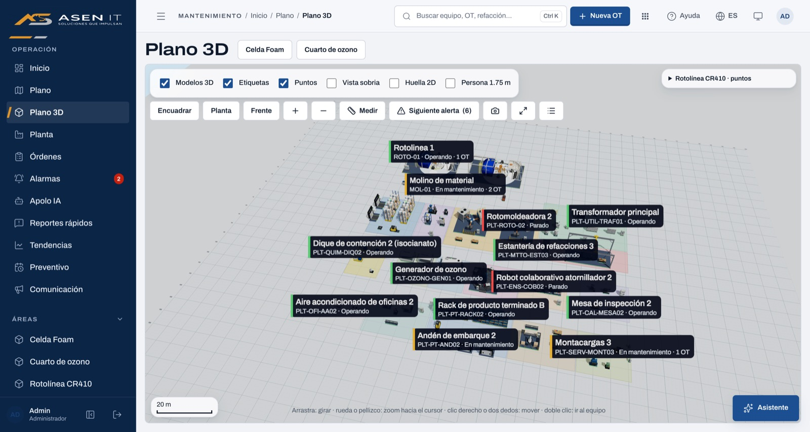
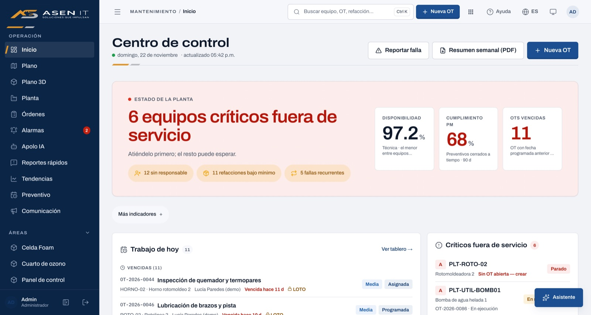
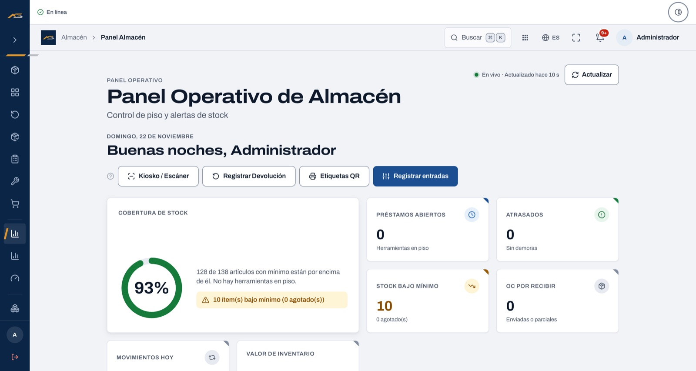
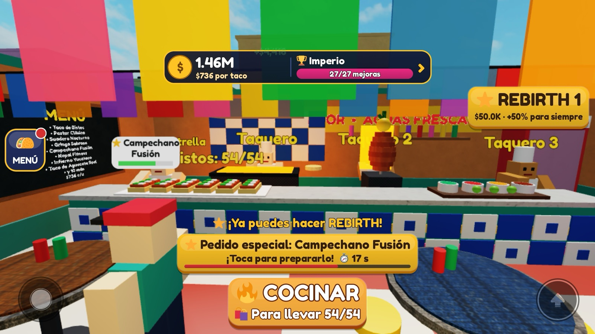
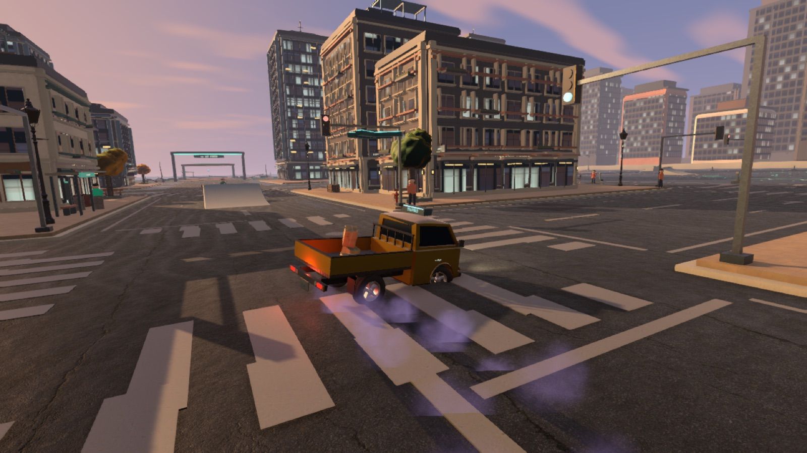
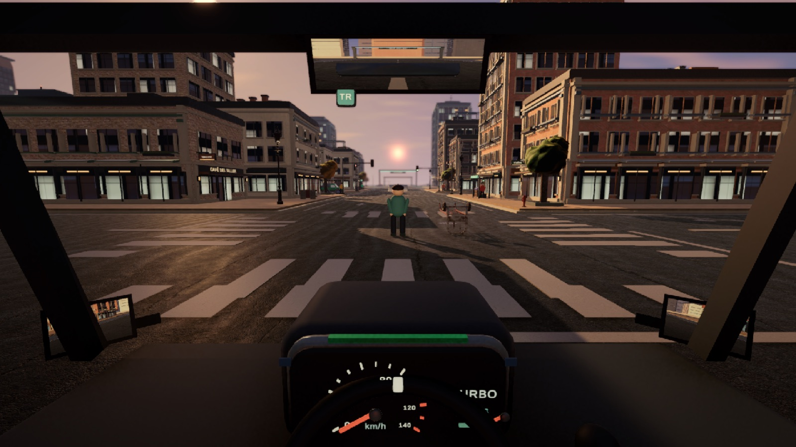
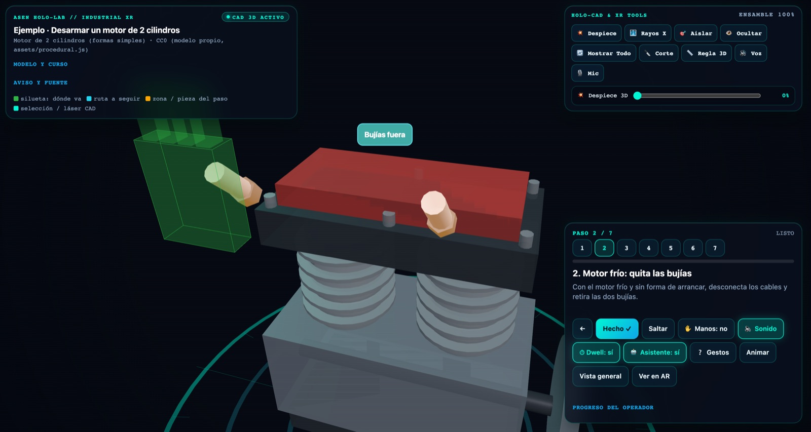

Plano 3D de la planta
Cada equipo en su lugar real, con su estado en vivo. Encuentras la máquina, ves su historial y abres una orden sin salir del plano.

Desarrollador · Hecho en México
Diseño, programo y pruebo cada pieza: del sistema que le dice a un técnico qué máquina reparar primero al taquero que atiende clientes en una calle de pixeles.
Asen IT es un ecosistema web propio para la operación diaria de una planta: mantenimiento, moldes, almacén y personas, con un solo inicio de sesión.
Cada equipo en su lugar real, con su estado en vivo. Encuentras la máquina, ves su historial y abres una orden sin salir del plano.

Disponibilidad, preventivo y equipos críticos de un vistazo. Las alarmas de PLC se convierten en órdenes propuestas, y un asistente de IA ayuda a priorizar.

Inventario con kiosko de piso, catálogo de moldes y matriz de habilidades del personal. Todo habla con todo.

Cada persona ve solo lo que le toca. Pensado para licenciarse a varias plantas.


Godot · Android
Empiezas con un triciclo de tacos y terminas con un imperio. Barrio mexicano vivo: tráfico, peatones, mercado, parque e interiores de casas.

Roblox · Luau
La misma idea en Roblox: cocina, pedidos especiales, mejoras por etapas y modo foto. Unas diez mil líneas de código propio.

Unity 6 · URP
Repartos a contrarreloj en un Kei Truck. Derrape con modelo de llanta, caja manual y una ciudad al atardecer con semáforos que sí funcionan.

Detalle
Tablero digital, retrovisores reales y cámara de persecución. Lo pequeño es lo que hace que se sienta bien.
¿Y el tuyo?

Instrucciones de mantenimiento paso a paso sobre un modelo 3D del equipo real.
Fotogrametría e IA corriendo en la propia Mac para convertir fotos en una malla lista para la impresora 3D.
Como una app para una planeadora de bodas: invitados, mesas y recepción el día del evento, aun sin señal.
Prototipos 2D con motores propios para probar una mecánica en una tarde.
Cada cambio se prueba en escritorio, tableta y celular antes de darlo por terminado.
Lo importante queda cubierto por pruebas automáticas que corren en cada versión.
Trabajo con agentes de IA como parte del equipo, con reglas claras y revisión humana.